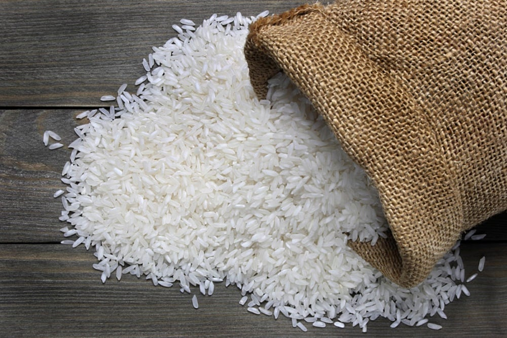
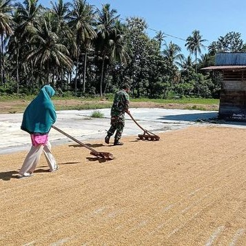
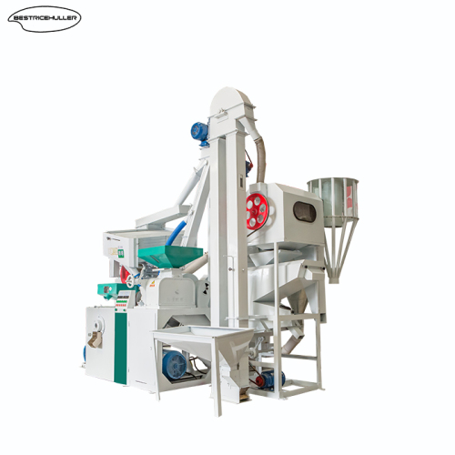
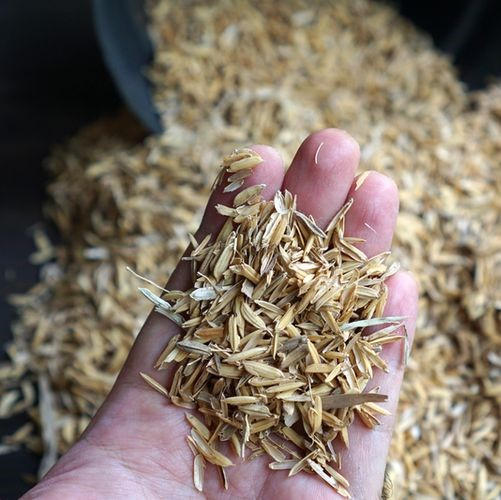

Profil
Profil Perusahaan
Tumbuhkan Kesejahteraan, Sajikan Kualitas

Tumbuhkan Kesejahteraan, Sajikan Kualitas
Penggilingan Padi Putro Taruno adalah penggilingan padi yang berkomitmen untuk memberikan produk berkualitas dan layanan terbaik kepada pelanggan. Didirikan sejak tahun 2000, kami telah menjadi mitra terpercaya bagi petani lokal, memungkinkan kami menghasilkan beras berkualitas tinggi. Dengan pengalaman lebih dari dua dekade, kami terus meningkatkan teknologi dan metode penggilingan untuk memastikan setiap butir beras memenuhi standar kualitas yang ketat. Kami percaya bahwa hubungan yang erat dengan petani lokal adalah kunci keberhasilan kami dalam menyediakan beras terbaik bagi pelanggan.
Proses
Penggilingan Padi
-

1
Pengeringan Padi
Padi yang masih basah, dikeringkan di bawah sinar matahari atau di dalam oven sampai benar-benar kering untuk diilakukan penggilingan.
-

2
Penggilingan Padi
Setelah padi dikeringkan, padi dimasukkan ke dalam mesin penggiling yang bertujuan untuk memisahkan kulit, beras, dan dedak.
-

3
Pengupasan Kulit Padi
Proses ini melibatkan pengupasan kulit padi yang disebut sekam. Pengupasan dilakukan untuk menghilangkan sekam dan menghasilkan beras bulir utuh yang kemudian siap untuk diputihkan.
-

4
Pemutihan Beras
Beras yang digiling dicuci dan diputihkan untuk menghilangkan kotoran atau sisa-sisa kulit padi yang masih menempel.
-
Beras
Siap
Dipasarkan
Hubungi Kami untuk informasi lebih lanjut
WhatsAppHarga
Harga Terbaru
Berikut adalah berbagai jenis padi dan beras dengan harga yang sesuai ketentuan pemerintah
- Semua
- Harga Padi
- Harga Beras
{kind=link}
{kind=link}
{kind=link}
{kind=link}
{kind=link}
{kind=link}
Pertanyaan
Pertanyaan yang sering ditanyakan
-
Apa jam operasional penggilingan padi ini?
Jam operasional Kami 07.30-16.00
-
Apa saja jenis produk yang ditawarkan?
Berbagai jenis beras dan dedak
-
Bagaimana cara menghubungi layanan pelanggan disini?
Hubungi pada kontak berikut: WhatsApp
-
Apa saja jenis ukuran kemasan yang tersedia?
Tersedia ukuran 3kg, 5kg, 10kg, dan 25kg
-
Bagaimana mekanisme pengantaran beras yang dipesan?
Beras akan diantar sesuai dengan alamat yang telah dimasukkan pada form pesanan
Pemesanan
Alamat dan Pemesanan
Lokasi:
Wagah, RT02 RW03, Popongan, Kec. Karanganyar, Kabupaten Karanganyar, Jawa Tengah 57715
WhatsApp:
+62 813 2628 8149